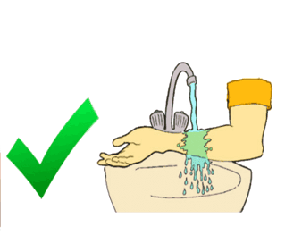
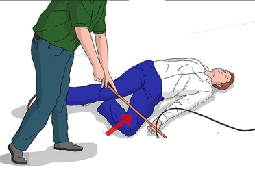

هي حروق سطحية تصيب الطبقة الخارحية من الجلد من أعراضها الإحمرار, التورم و الاحساس بالالم الشديد
الحروق من الدرجة الثانية
هي حروق متوسطة العمق والتي تمتد الى الطبقة الداخلية من الجلد حيث تتكون فقاعات أو فقاقيع مملوئة بالسوائل
تشمل الاعراض الاحمرار, التورم, الالم الشديد و تكون الفقاقيع.
الحروق من الدرجة الثالثة
هي حروق عميقة تصيب جميع طبقات الجلد و أحيانا ما تحت الجلد من العضلات و العظام التي قد تتفحم, و تعد هذه
الحروق الاخطر لكن في هذه الحالة غالبا لا يحس المصاب بالألم نظرا لإحتراق المستقبلات العصبية التي تتواجد في
الجلد.
تنبيه*
لا تستعمل الاشياء التالية: الثلج, الماء المثلج, معجون الاسنان, الزبدة أو أي مرهم
-لا تضع القطن فوق الحرق كي لا يلتصق.
الهدف
الهدف من الإسعاف في هذه الحالة هو تبريد الانسجة التي تعرضت للحرق كي لا تتلف المزيد من الخلايا الاخرى من
الحرارة المتواجدة حولها و ذلك بإستعمال المياه الجارية لكن في حالة عدم وجود المياه تغطي الحرق بالكمادات و
تتوجه للمستشفى.
المعالجة
إبعاد المصاب عن مكان الخطر أو إبعاد الشيء الذي سبب الحروق.
إفحص العلامات الحيوية (النبض, مجرى الهواء, التنفس) و قم بإزالة الاكسسوارات (الحلي, الخواتم, الساعة اليدوية
...) وكذا الملابس المحترقة الغير الملتصقة بمكان الحرق.
بالنسبة للحروق من الدرجة الاولى
يجب تبريد مكان الحرق بالمياه الجارية تحت الصنبور (أو قنينة ماء) بسلاسة لاكثر من 10 دقائق حتى تخف حدة الألم.
أطلب المساعدة الطبية إذا زاد أو إستمر الألم و الاحمرار لأكثر من ساعة و كذا عند حدوث التورم و الحمى.
بالنسبة للحروق من الدرجة الثانية
تغمر مكان الحرق أو تسكب عليه المياه الجارية لكن لا تثقب أو تفتح الفقاقيع الناتجة التي تكون مملوئة بالسوائل و
غط الحرق بقماش نظيف أو ضماد معقم يجب التوجه للمستشفى.
بالنسبة للحروق من الدرجة الثالثة
يجب تغطية مكان الحرق قماش نظيف او ضماد معقم و ثبتها برباط دون إغفال تغطية المصاب والاسراع به للمستشفى.
الحروق الكيميائية
المعالجة
إبعاد المصاب عن مكان الخطر أو إبعاد المادة المسببة للحرق و القيام بفحص سريع للوظائف الحيوية (الوعي, التنفس
و النبض).
سكب المياه الجارية بوفرة (مياه الصنبور مثلا) على الفور على الحرق لمدة حوالي 20 دقيقة لمحاولة تخفيف تركيز
المادة و تقليل الأضرار لكن إذا كانت المادة المسببة للحرق قد تتفاعل مع الماء و تسبب أضرار أخرى كمادة الجير
الحي فيجب محاولة إزالتها أولا.

نزع الملابس حول مكان الإصابة.
يجب إزالة أي خواتم, مجوهرات, ساعة اليد إن كانت قريبة من مكان الحرق.
تغطية المنطقة المصابة بقماش نظيف لا يلتصق أو بشاش طبي غير لاصق.
طلب المساعدة الطبية أو طلب سيارة الإسعاف لإسعاف المصاب للمستشفى لإستكمال العلاج.
الحروق الكهربائية
تنبيه*
لا تلمس المصاب ما دام متصل بالتيار الكهربائي.
لا تلمس مكان الحرق بيدك مباشرة.
لا تضع أية مراهم و لا أية مواد فوق مكان الحرق.
لا تضع أي ضمادات لاصقة على الحرق.
المعالجة
قبل التوجه و فحص المصاب يجب أولا قطع أو فصل التيار الكهربائي و لايجب لمس المصاب مباشرة وهو متصل بمصدر
الكهرباء ضمانا لسلامتك.كما يمكن إبعاد مصدر الكهرباء بالاستعانة بأداه عازلة غير موصلة للكهرباء (عصا من خشب او
بلاستيك مثلا).

فحص العلامات الحيوية (النبض, التنفس و الوعي) وفي حالة توقف القلب يجب القيام بالانعاش القلبي الرئوي فورا أما
إن كان المصاب فاقد للوعي و يتنفس فضعه على جانبه (وضعية الإفاقة).
إتصل بسيارة الاسعاف بعد فحص سريع للمصاب أو طلب ذلك من شخص مساعد بجانبك.
إرفع الأماكن المصابة فوق مستوى القلب ما أمكن و أزل أي خواتم أو أساور .
تبريد مكان الحرق من مكان دخول التيار لمكان خروجه بسكب الماء لمدة 10 دقائق في حالة الحروق من الدرجة الأولى
أو الثانية.
تغطية مكان الحرق بشاش أو ضمادة غير لاصقة أو بكيس بلاستيكي.
راقب حالة المصاب بإنتظار سيارة الاسعاف لنقل المصاب للمستشفى.
الرذاذ الكيميائي في العين
المعالجة
اغسل عينك بالماء
استخدم ماء صنبور نظيفًا فاترًا لمدة 20 دقيقة على الأقل. استخدم أسرع طريقة من الطرق التالية
اذهب للاستحمام ووجه تيارًا لطيفًا من الماء على جبهتك أعلى العين المصابة، أو وجه تيارًا على جسر الأنف في حالة تأثر العينين، واجعلْ جفون العين أو العينين المصابة مفتوحة.
وجّه رأسك لأسفل وقم بإدارتها للجانب؛ ثم اجعل جفون العين المصابة مفتوحة أسفل صنبور الماء الجاري برفق، وإذا كان بإمكانك الوصول إلى محطة غسيل العين الموجودة بموقع العمل، فاستخدم المحطة لغسل عينك.
اغسل يديك بالماء والصابون
بشكل كامل لتتأكد من عدم وجود مواد كيميائية أو صابون عليهما.
قم بإزالة العدسات اللاصقة
إذا لم تخرج العدسات اللاصقة أثناء الغسل، فقم بإخراجها